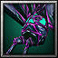

- 主要屬性 靈活
攻擊範圍 700
- 基礎護甲 4
基礎攻速 1.8
- 基礎攻擊 100 - 116
基礎跑速 320
伊達政宗的母親最上義姬是當時奧州的強勢大名最上義守的女兒，是最上義光的妹妹。當時伊達家有意與最上家聯姻，派中野宗時做使者到最上家提親，但有反叛之心的中野宗時與最上義守、義姬密謀假意聯姻，等與輝宗成婚並生下一子後，謀殺輝宗並帶兒子回最上家山形城。兩人成親後，在龜岡文殊堂度蜜月。當晚，義姬夢到獨眼神僧萬海上人希望轉世。因為這個吉瑞之夢而懷孕，於永祿十年（1567）生下了政宗，父親輝宗為愛子起名"梵天丸"。
-
--神陣
-
--
-
--
每次攻擊可以造成(40/60/80/100)範圍傷害。
此技能僅於施展「霧毒幻化」期間產生作用，技能等級與其相同。
-
W腐蝕之箭
-
80/110/140/170
-
12
射出含有劇毒的腐蝕之箭，每秒造成(50/80/110/170)傷害，並減緩(10/20/30/40)%攻擊速度與移動速度，持續(5/6/7/8)秒。
-
E蛛網纏身
-
120/140/160/180
-
22/20/18/16
使目標敵軍被充滿劇毒的蛛網所纏，它將無法移動和攻擊，並且每秒受到150傷害，持續(1/2/3/4)秒。
冷卻時間隨技能等級提升降低。
-
R霧毒幻化
-
60/60/60/60
-
16/13/10/7
(被動)
增加(5/10/15/20)靈活。
(啟動)
使自身進入霧毒幻化，攻擊型態轉變為立即，並且增加200攻擊距離，額外獲得"霧毒矢"能力，每次攻擊可以造成(40/60/80/120)範圍傷害，持續6秒。
增加(5/10/15/20)靈活。
(啟動)
使自身進入霧毒幻化，攻擊型態轉變為立即，並且增加200攻擊距離，額外獲得"霧毒矢"能力，每次攻擊可以造成(40/60/80/120)範圍傷害，持續6秒。
冷卻時間隨技能等級提升降低。
-

-
T蜘蛛纏身
-
110/150/190
-
85/70/55
對著目標敵軍釋放出劇毒蜘蛛纏繞敵人，使目標降低50%移動速度與100%攻擊速度，每0.5秒受到(66/144/256)傷害，持續12秒。
學習等級為6/12/18，無視魔法免疫牽制，冷卻時間隨技能等級提升降低。
-

-
B屬性加乘
-
--
-
--
永久性的提升(3/6/9/12)靈活、智慧和力量。